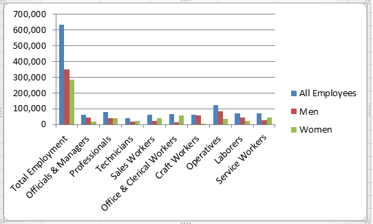

In our first set of labs we will be getting familiar with Microsoft Excel, a tool used by many organisations to evaluate daily performance and to make critical strategic and operational decisions.
This first lab will briefly review some of the fundamental skills needed to use Excel. This is not meant to be a complete tutorial; many good Excel tutorials can be found online.
Spreadsheet software for personal computers has become an indispensable tool for business analysis, particularly for the manipulation of numberical data and the development and analysis of decision models. Some differences exist between 2007 and 2010. If you do use another version you should be able to apply Excel easily to the problems and exercises. In addition it must be noted that Mac versions of Excel do not have the full funcitonality that Windows versions have.
Although Excel has some flaws and limitations from a statistical perspective, its widespread availability makes it the software of choice for many business professionals.
If you are working on the workstations in the IT Building all machines should be installed with Microsoft Excel 2010.
Proceed with the next step of the lab.
You must have a copy of Microsoft Excel 2010 or newer installed.
There will be addons utilised in future practicals but for the moment the standard installation of Excel is sufficient. The student site that supports a book used in this module contains the links to software, along with data files and other materials.
This lab assumes you are familiar with the most elementary spreadsheet concepts and procedures:
Download the following file and open it in Excel
Excel provides several ways of copying formulas to different cells. This is extremely useful in building decision models, because many models require replication of formulas for different periods of time, similar products, and so on.
One way is to select the cell with the formula to be copied, click the copy button from the clipboard group on the ribbon (or click Ctrl+C), click on the cell you wish to copy to and click the paste button (or click Ctrl+V).
You can also enter a formula into a range of cells by selecting the range of cells typing in the formula and press Ctrl+Enter. Use the small black square on a selected cell to copy the formula down a column or across a row.
The structure of the formula is the same as in the original cell but the cell references have been changed to reflect the relative addresses of the formula in the new cells.
Practice this using the science engineering data file. Calculate the difference between the jobs in each category from 2000 to 2010. To see all of your formulas on a worksheet you can use the Ctrl+` keys to change viewing and hiding formulas.
Sometimes when you copy a formula you do not want the cell references to change. For example, calculate the percent of the total jobs for each occupation in 2010.
In cell E4 enter the formula =C4/$C$12. Then if you copy this formula down column E for the other occupations the numerator will change to reference each occupation but the denominator will still point to cell C12. You should be careful to use relative and absolute addressing appropriately in your models. To convert a relative reference to an absolute one, just press F4 when you are in the cell reference.
Excel uses standard "PEMDAS" order of operations for arithmetic. Parentheses, Exponents, Multiplication and Division, Addition and Subtraction.
Parentheses (6-1)
Exponents ^
Multiplication *
Division /
Addition +
Subtraction -
Assume we want (6-3)(4+2) = 18
In Excel we write =(6-3)*(4+2)
Assume we want (3/5) squared
In Excel we write =(3/5)^2To see formula's in a cell you can precede the formula with a apostrophe, then excel will not activate the formula until you remove the apostrophe.
Raw data is often hard to interpret, charts and graphs provide a convenient way to visualise data and provide information and insight for making better decisions.
Excel provides vertical and horizontal bar charts, line charts, pie charts, area charts, scatter plots, three-dimensional charts and many others.
Excel calls vertical bar charts, column charts and horizontal bar charts, bar charts.
Open the file:
Create a column chart for the EEO Employment Report data.
Use the data for All employees, Men and Women, (rows 4,5 and 6) the chart should show the number of workers in each category.

What does a stacked chart look like?
Line charts provide a useful means for displaying data over time. You can plot multiple data series in line charts; however, they can be difficult to interpret if the magnitude of the data values differs greatly. Create a line chart for the closing prices in the Excel file SP500